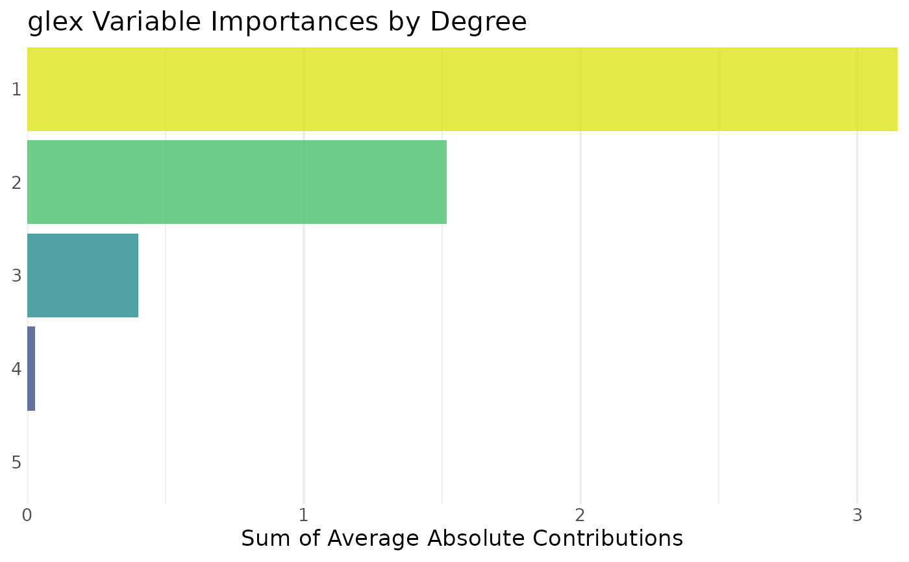
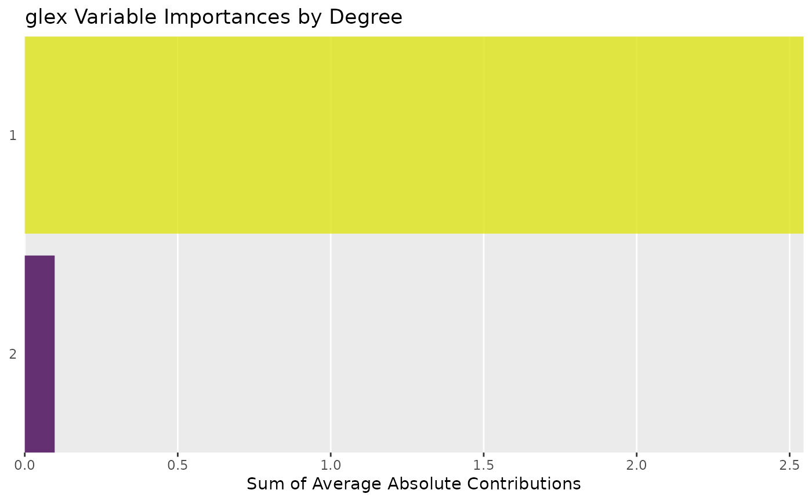

Variable Importance for Main and Interaction Terms
Value
A data.table with columns:
degree(integer): Degree of interaction of theterm, with1being main effects,2being 2-degree interactions etc.term(character): Model term, e.g. main effectx1or interaction termx1:x2,x1:x3:x5etc.class(factor): For multiclass targets only: The associated target class. Lists all classes in the target, not limited to the majority vote.m(numeric): Average absolute contribution ofterm, see Details.m_rel(numeric):mbut relative to the average prediction (interceptinglex()output).
Details
The m reported here is the average absolute value of m as reported by glex(), aggregated by term:
$$\mathtt{m} = \frac{1}{n} \sum_{i = 1}^n |m| $$
In turn, m_rel rescales m by the average prediction of the model (\(m_0\), intercept as reported by glex()):
$$\mathtt{m\_rel} = \frac{\mathtt{m}}{m_0}$$
Examples
set.seed(1)
# Random Planted Forest -----
if (requireNamespace("randomPlantedForest", quietly = TRUE)) {
library(randomPlantedForest)
rp <- rpf(mpg ~ ., data = mtcars[1:26, ], max_interaction = 3)
glex_rpf <- glex(rp, mtcars[27:32, ])
# All terms
vi_rpf <- glex_vi(glex_rpf)
library(ggplot2)
# Filter to contributions greater 0.05 on the scale of the target
autoplot(vi_rpf, threshold = 0.05)
# Summarize by degree of interaction
autoplot(vi_rpf, by_degree = TRUE)
# Filter by relative contributions greater 0.1%
autoplot(vi_rpf, scale = "relative", threshold = 0.001)
}

# xgboost -----
if (requireNamespace("xgboost", quietly = TRUE)) {
library(xgboost)
x <- as.matrix(mtcars[, -1])
y <- mtcars$mpg
xg <- xgboost(data = x[1:26, ], label = y[1:26],
params = list(max_depth = 4, eta = .1),
nrounds = 10, verbose = 0)
glex_xgb <- glex(xg, x[27:32, ])
vi_xgb <- glex_vi(glex_xgb)
library(ggplot2)
autoplot(vi_xgb)
autoplot(vi_xgb, by_degree = TRUE)
}
